Code
pacman::p_load(tidyverse, lubridate,
ggdist, ggridges, ggthemes, colorspace,
ggstatsplot,
patchwork, skimr, broom, scales)Wang Xiaohan
May 20, 2026
May 24, 2026
This study applies visual analytics techniques in R to a real-world Spanish non-life motor insurance portfolio (105,555 policy-year records, 30 variables, covering November 2015 to December 2018). The objective is to explore the distributions of numerical, categorical and temporal variables, and to investigate and statistically validate the factors that influence the profitability and volatility of the portfolio.
The slide deck below summarises the key findings for a non-technical audience. Use the arrow keys to navigate, or open it in full screen.
The primary dataset uses a semicolon (;) as its delimiter, so it must be imported with read_delim() rather than the comma-based read_csv().
A first check on the dimensions and structure:
Rows: 105,555
Columns: 30
$ ID <dbl> 1, 1, 1, 1, 2, 2, 3, 3, 3, 3, 4, 4, 4, 5, 5, 6, 6…
$ Date_start_contract <chr> "05/11/2015", "05/11/2015", "05/11/2015", "05/11/…
$ Date_last_renewal <chr> "05/11/2015", "05/11/2016", "05/11/2017", "05/11/…
$ Date_next_renewal <chr> "05/11/2016", "05/11/2017", "05/11/2018", "05/11/…
$ Date_birth <chr> "15/04/1956", "15/04/1956", "15/04/1956", "15/04/…
$ Date_driving_licence <chr> "20/03/1976", "20/03/1976", "20/03/1976", "20/03/…
$ Distribution_channel <dbl> 0, 0, 0, 0, 0, 0, 0, 0, 0, 0, 0, 0, 0, 0, 0, 0, 0…
$ Seniority <dbl> 4, 4, 4, 4, 4, 4, 15, 15, 15, 15, 3, 3, 3, 3, 3, …
$ Policies_in_force <dbl> 1, 1, 2, 2, 2, 2, 1, 1, 1, 1, 1, 2, 2, 2, 2, 1, 1…
$ Max_policies <dbl> 2, 2, 2, 2, 2, 2, 2, 2, 2, 2, 2, 2, 2, 2, 2, 2, 2…
$ Max_products <dbl> 1, 1, 1, 1, 1, 1, 1, 1, 1, 1, 1, 1, 1, 1, 1, 2, 2…
$ Lapse <dbl> 0, 0, 0, 0, 0, 0, 0, 0, 0, 0, 0, 0, 0, 0, 0, 0, 0…
$ Date_lapse <chr> NA, NA, NA, NA, NA, NA, NA, NA, NA, NA, NA, NA, N…
$ Payment <dbl> 0, 0, 0, 0, 1, 1, 0, 0, 0, 0, 0, 0, 0, 0, 0, 0, 0…
$ Premium <dbl> 222.52, 213.78, 214.84, 216.99, 213.70, 215.83, 3…
$ Cost_claims_year <dbl> 0.00, 0.00, 0.00, 0.00, 0.00, 0.00, 0.00, 0.00, 0…
$ N_claims_year <dbl> 0, 0, 0, 0, 0, 0, 0, 0, 0, 0, 0, 0, 0, 0, 0, 0, 0…
$ N_claims_history <dbl> 0, 0, 0, 0, 0, 0, 0, 0, 0, 0, 0, 0, 0, 0, 0, 2, 2…
$ R_Claims_history <dbl> 0.00, 0.00, 0.00, 0.00, 0.00, 0.00, 0.00, 0.00, 0…
$ Type_risk <dbl> 1, 1, 1, 1, 1, 1, 3, 3, 3, 3, 1, 1, 1, 1, 1, 3, 3…
$ Area <dbl> 0, 0, 0, 0, 0, 0, 0, 0, 0, 0, 0, 0, 0, 0, 0, 0, 0…
$ Second_driver <dbl> 0, 0, 0, 0, 0, 0, 0, 0, 0, 0, 0, 0, 0, 0, 0, 0, 0…
$ Year_matriculation <dbl> 2004, 2004, 2004, 2004, 2004, 2004, 2013, 2013, 2…
$ Power <dbl> 80, 80, 80, 80, 80, 80, 85, 85, 85, 85, 6, 6, 6, …
$ Cylinder_capacity <dbl> 599, 599, 599, 599, 599, 599, 1229, 1229, 1229, 1…
$ Value_vehicle <dbl> 7068.00, 7068.00, 7068.00, 7068.00, 7068.00, 7068…
$ N_doors <dbl> 0, 0, 0, 0, 0, 0, 5, 5, 5, 5, 0, 0, 0, 0, 0, 4, 4…
$ Type_fuel <chr> "P", "P", "P", "P", "P", "P", "P", "P", "P", "P",…
$ Length <dbl> NA, NA, NA, NA, NA, NA, 3.999, 3.999, 3.999, 3.99…
$ Weight <dbl> 190, 190, 190, 190, 190, 190, 1105, 1105, 1105, 1…All six date columns are imported as character strings in DD/MM/YYYY format. I convert them to proper Date type using lubridate::dmy(), which matches the day-month-year order of the source data.
Rows: 105,555
Columns: 6
$ Date_start_contract <date> 2015-11-05, 2015-11-05, 2015-11-05, 2015-11-05, …
$ Date_last_renewal <date> 2015-11-05, 2016-11-05, 2017-11-05, 2018-11-05, …
$ Date_next_renewal <date> 2016-11-05, 2017-11-05, 2018-11-05, 2019-11-05, …
$ Date_birth <date> 1956-04-15, 1956-04-15, 1956-04-15, 1956-04-15, …
$ Date_driving_licence <date> 1976-03-20, 1976-03-20, 1976-03-20, 1976-03-20, …
$ Date_lapse <date> NA, NA, NA, NA, NA, NA, NA, NA, NA, NA, NA, NA, …Several variables are stored as numeric codes (0, 1, 2…). I convert them into labelled factors so that plots and tables are self-explanatory. The encodings follow the dataset cookbook (Descriptive of the variables.xlsx) and the source paper.
dat <- dat %>%
mutate(
Type_risk = factor(Type_risk,
levels = c(1, 2, 3, 4),
labels = c("Motorbike", "Van", "Passenger car", "Agricultural")),
Distribution_channel = factor(Distribution_channel,
levels = c(0, 1), labels = c("Agent", "Broker")),
Payment = factor(Payment,
levels = c(0, 1), labels = c("Annual", "Semi-annual")),
Area = factor(Area,
levels = c(0, 1), labels = c("Rural", "Urban")),
Second_driver = factor(Second_driver,
levels = c(0, 1), labels = c("No", "Yes")),
Lapse = factor(Lapse,
levels = c(0, 1), labels = c("Retained", "Lapsed")),
Type_fuel = factor(Type_fuel)
) Type_risk Distribution_channel Payment Area
Motorbike : 8502 Agent :57917 Annual :71864 Rural:76644
Van :13212 Broker:47638 Semi-annual:33691 Urban:28911
Passenger car:82990
Agricultural : 851
Second_driver Lapse Type_fuel
No :92497 Retained:84007 D :64998
Yes:13058 Lapsed :20008 P :38793
NA's : 1540 NA's: 1764
The dataset contains no ready-made profitability field, so I derive the key indicators needed to study portfolio profitability and volatility. Following the source paper, the Loss Ratio (claims divided by premium) is the central proxy for profitability — a value above 100% indicates a technical loss.
extract_year <- 2019
sandbox <- dat %>%
mutate(
Loss_Ratio = if_else(Premium > 0, Cost_claims_year / Premium, NA_real_),
Technical_Result = Premium - Cost_claims_year,
Profitable = factor(if_else(Technical_Result > 0,
"Profitable", "Loss-making")),
Has_Claim = factor(if_else(N_claims_year > 0, "Claim", "No claim")),
Claim_Severity = if_else(N_claims_year > 0,
Cost_claims_year / N_claims_year, NA_real_),
Age = extract_year - year(Date_birth),
Vehicle_Age = extract_year - 1 - Year_matriculation
) Premium Cost_claims_year Loss_Ratio Technical_Result
Min. : 40.14 Min. : 0.0 Min. : 0.0000 Min. :-260229.5
1st Qu.: 241.61 1st Qu.: 0.0 1st Qu.: 0.0000 1st Qu.: 201.7
Median : 292.28 Median : 0.0 Median : 0.0000 Median : 271.0
Mean : 315.89 Mean : 153.6 Mean : 0.4762 Mean : 162.3
3rd Qu.: 361.64 3rd Qu.: 0.0 3rd Qu.: 0.0000 3rd Qu.: 340.1
Max. :2993.34 Max. :260853.2 Max. :1071.2480 Max. : 2993.3
Profitable Has_Claim Claim_Severity Age
Loss-making: 9388 Claim :19646 Min. :4.007e+00 Min. : 19.00
Profitable :96167 No claim:85909 1st Qu.:6.446e+01 1st Qu.: 39.00
Median :1.542e+02 Median : 49.00
Mean :4.671e+02 Mean : 49.35
3rd Qu.:4.746e+02 3rd Qu.: 59.00
Max. :1.181e+05 Max. :101.00
NA's :85909
Vehicle_Age
Min. : 0.00
1st Qu.:10.00
Median :13.00
Mean :13.27
3rd Qu.:17.00
Max. :68.00
The techniques in this study were selected to match the data characteristics and the analytical question, drawing on the methods practised in the course hands-on exercises.
For univariate distribution analysis, the Loss Ratio is highly right-skewed with a long catastrophic tail. A simple histogram alone hides how the bulk of the distribution behaves, so I pair it with ridgeline plots and raincloud plots (Hands-on Exercise 4_1). Ridgelines compare the shape of the distribution across vehicle types in a compact form, while raincloud plots add the precise median and quartiles via an embedded boxplot — together they describe both shape and central tendency.
For bivariate analysis with statistical validation, I use the ggstatsplot family from Hands-on Exercise 4_2, because it integrates the visualisation and the inferential test (statistic, p-value, and effect size) into a single, self-documenting graphic. The specific test is chosen by data type: a nonparametric Kruskal-Wallis test (ggbetweenstats) for comparing the skewed Loss Ratio across vehicle types, since ANOVA’s normality and equal-variance assumptions are violated; a chi-square test of association (ggbarstats) for two categorical variables (claim incidence vs area); and a Spearman correlation (ggscatterstats) for monotonic numeric relationships that need not be linear. Where the dataset exceeds 100,000 rows, I work on a random sample (set.seed(1234)) to keep the point clouds readable without changing the statistical conclusion.
For the bonus analysis, the funnel plot (Hands-on Exercise 4_4) is chosen specifically to compare claim rates across segments of very different sizes — it accounts for the fact that small segments fluctuate more by chance, directly addressing portfolio volatility. Finally, a logistic-regression forest plot (broom + ggplot2) is used to assess each factor’s independent effect after controlling for the others and for multicollinearity identified in the correlation heatmap.
About 81% of policies incur no claim in a given year, so their Loss Ratio is exactly 0. To reveal the shape of the loss experience, the histogram below focuses on policies that did incur a claim. The Loss Ratio is capped at its 99th percentile for display only; all later statistical tests use uncapped values.
Among policies that incur a claim, the histogram below shows the Loss Ratio is still right-skewed: many claiming policies stay well below the 100% break-even line, but a substantial group exceeds it and runs at a technical loss.
sandbox %>%
filter(Has_Claim == "Claim", !is.na(Loss_Ratio_capped)) %>%
ggplot(aes(x = Loss_Ratio_capped)) +
geom_histogram(bins = 60, fill = "#2c7fb8", colour = "white", alpha = 0.9) +
geom_vline(xintercept = 1, colour = "red", linewidth = 1, linetype = "dashed") +
annotate("text", x = 1.05, y = Inf, label = "Break-even (100%)", hjust = 0, vjust = 1.5, colour = "red", size = 3.2) +
scale_x_continuous(labels = scales::percent_format()) +
labs(title = "Among claiming policies, many run at a technical loss", subtitle = "Loss Ratio of policies with a claim (capped at 99th percentile)", x = "Loss Ratio (Claims / Premium)", y = "Number of policies") +
theme_minimal(base_size = 12)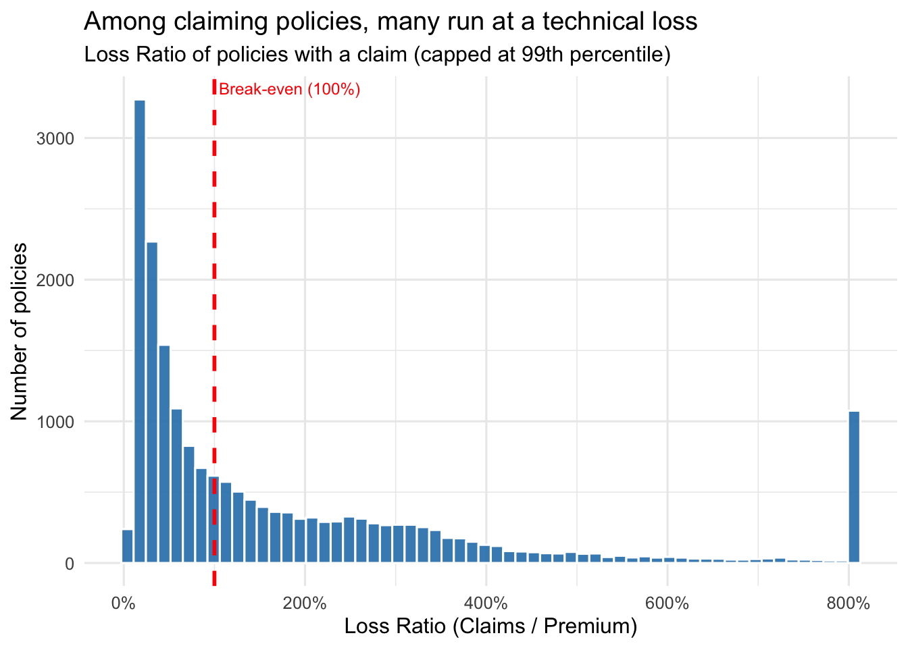
The distribution is strongly right-skewed. The majority of claiming policies sit below the 100% break-even line and remain profitable, but a long tail extends past it: a substantial share of claiming policies run at a technical loss. The spike at the 800% cap represents all policies whose true Loss Ratio exceeds eight times the premium — a small group of catastrophic claims that, despite their rarity, drive a disproportionate share of total losses. This confirms that profitability is shaped less by typical claims than by the behaviour of the tail.
Applying the ridgeline technique from Hands-on Exercise 4, I compare the Loss Ratio distribution across the four vehicle types. The fill colour encodes quartiles, so the central tendency and spread of each vehicle type are directly comparable.
sandbox %>%
filter(Has_Claim == "Claim", !is.na(Loss_Ratio_capped)) %>%
ggplot(aes(x = Loss_Ratio_capped, y = Type_risk, fill = factor(stat(quantile)))) +
stat_density_ridges(geom = "density_ridges_gradient", calc_ecdf = TRUE, quantiles = 4, quantile_lines = TRUE) +
scale_fill_viridis_d(name = "Quartiles") +
labs(title = "Loss Ratio distribution differs across vehicle types", x = "Loss Ratio (capped)", y = NULL) +
theme_ridges()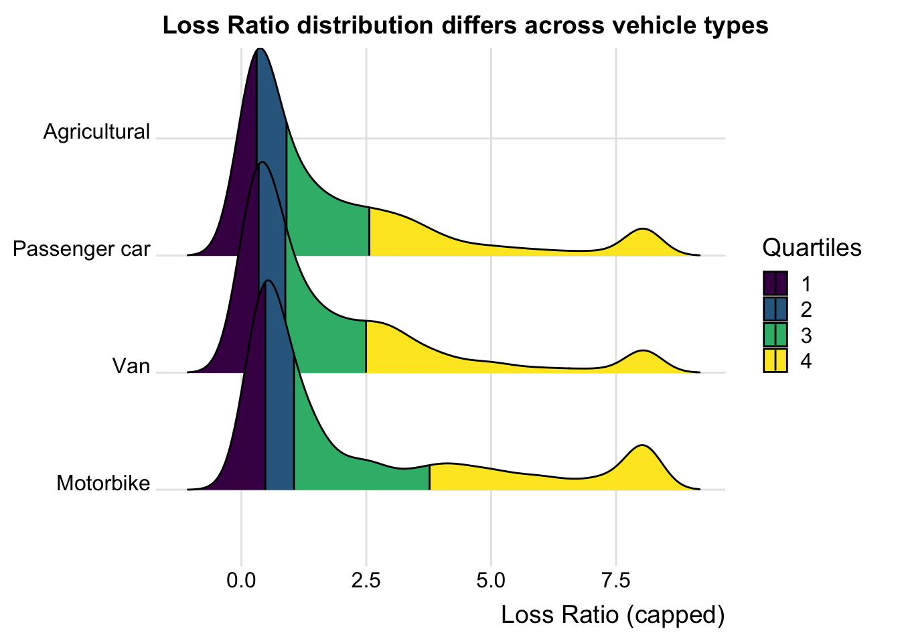
The Kruskal-Wallis test returns p = 0.32, well above 0.05, so the differences in Loss Ratio across vehicle types are not statistically significant. The median Loss Ratios are also close (Motorbike 0.60, Van 0.64, Passenger car 0.76). This is an important negative result: although the ridgeline plot suggested visually distinct shapes, once a claim has occurred, the severity of that claim does not depend meaningfully on vehicle type. This redirects the search for drivers towards claim frequency rather than severity.
The raincloud plot combines a half-density “cloud” (ggdist::stat_halfeye) with a boxplot, following the technique from Hands-on Exercise 4. It shows both the distribution shape and the precise median and quartiles for each vehicle type.
sandbox %>%
filter(Has_Claim == "Claim", !is.na(Loss_Ratio_capped)) %>%
ggplot(aes(x = Type_risk, y = Loss_Ratio_capped)) +
stat_halfeye(adjust = 0.5, justification = -0.2, .width = 0, point_colour = NA, fill = "#2c7fb8") +
geom_boxplot(width = 0.15, outlier.shape = NA, alpha = 0.6) +
geom_hline(yintercept = 1, linetype = "dashed", colour = "red") +
coord_flip() +
labs(title = "Spread and central tendency of Loss Ratio by vehicle type", subtitle = "Half-eye density + boxplot (raincloud); red line = break-even", x = NULL, y = "Loss Ratio (capped)") +
theme_minimal(base_size = 12)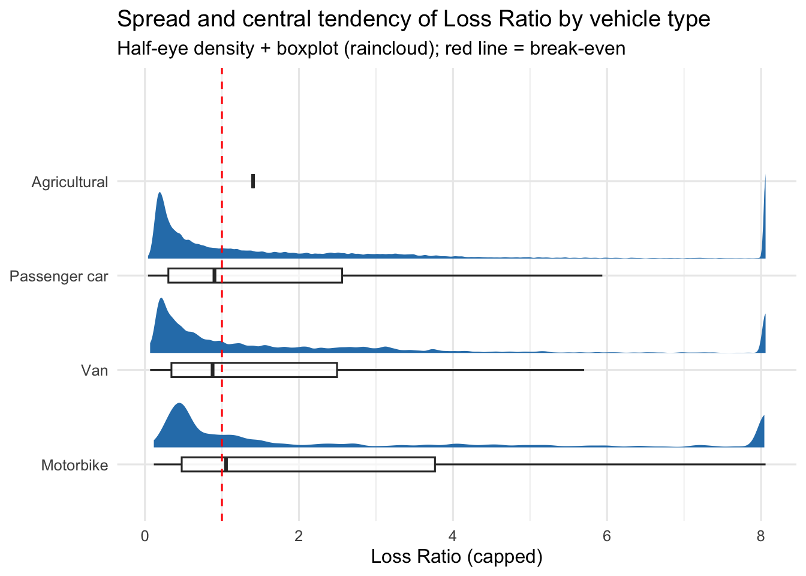
Beyond the numerical Loss Ratio, the portfolio is described by several key categorical variables. The bars below (ordered by frequency using forcats) show the dominant segments: passenger cars, rural circulation, and diesel fuel.
fuel_dat <- sandbox %>% filter(!is.na(Type_fuel))
p1 <- ggplot(sandbox, aes(y = fct_infreq(Type_risk))) +
geom_bar(fill = "#756bb1") +
labs(title = "Vehicle type", x = "Count", y = NULL)
p2 <- ggplot(sandbox, aes(y = fct_infreq(Area))) +
geom_bar(fill = "#756bb1") +
labs(title = "Area", x = "Count", y = NULL)
p3 <- ggplot(fuel_dat, aes(y = fct_infreq(Type_fuel))) +
geom_bar(fill = "#756bb1") +
labs(title = "Fuel type", x = "Count", y = NULL)
p4 <- ggplot(sandbox, aes(y = fct_infreq(Distribution_channel))) +
geom_bar(fill = "#756bb1") +
labs(title = "Channel", x = "Count", y = NULL)
(p1 + p2) / (p3 + p4)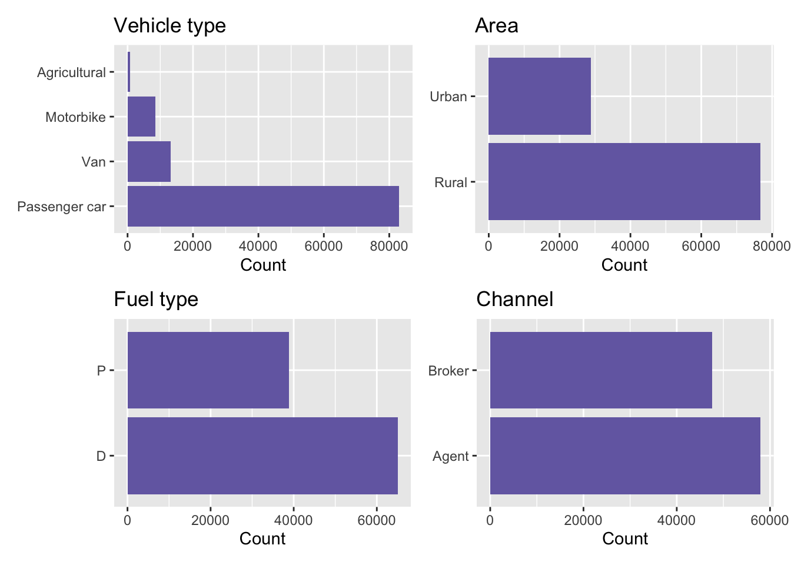
To explore the temporal dimension, I count policies by the year their contract started. This reveals when new business entered the portfolio.
intake <- sandbox %>%
mutate(start_year = year(Date_start_contract)) %>%
count(start_year)
ggplot(intake, aes(x = start_year, y = n)) +
geom_col(fill = "#fd8d3c") +
labs(title = "New-business intake by contract start year", x = "Contract start year", y = "Number of policies") +
theme_minimal(base_size = 12)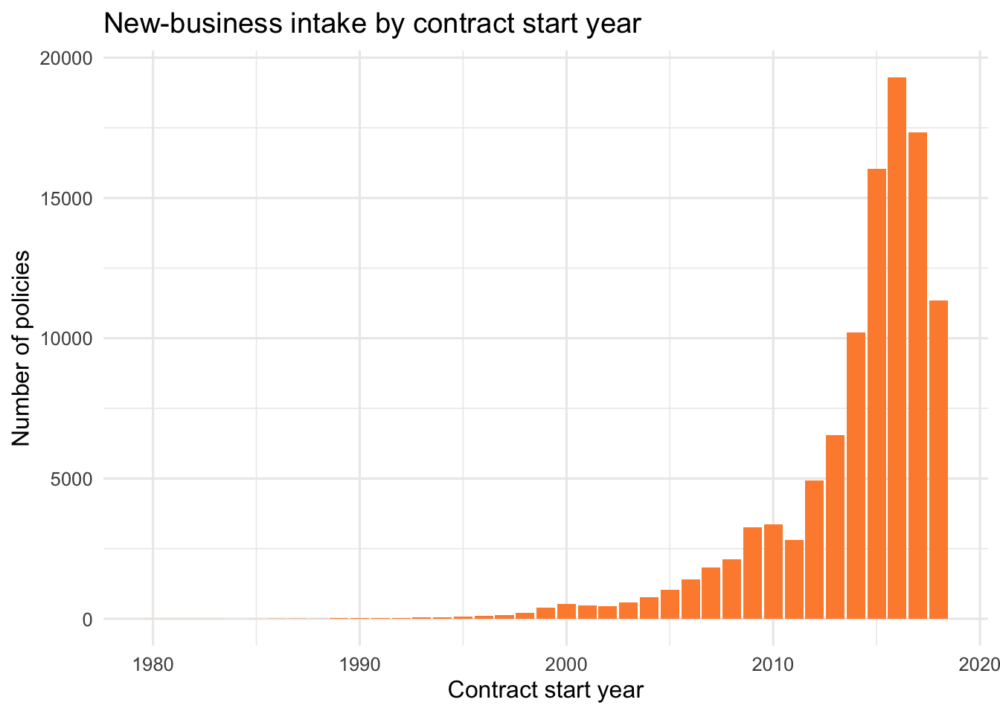
Figures 2 and 3 hinted at visually different Loss Ratio shapes across vehicle types. Here I test whether this apparent difference is statistically real, using ggbetweenstats from Hands-on Exercise 4_2. Because Loss Ratio is heavily right-skewed and variances are unequal, I use a nonparametric (Kruskal-Wallis) test rather than ANOVA. To keep the plot readable on 100k+ rows, I work on a random sample of claiming policies.
set.seed(1234)
br_dat <- sandbox %>%
filter(Has_Claim == "Claim", !is.na(Loss_Ratio), Loss_Ratio < 5) %>%
slice_sample(n = 3000)
ggbetweenstats(data = br_dat, x = Type_risk, y = Loss_Ratio, type = "nonparametric", xlab = "Vehicle type", ylab = "Loss Ratio", title = "Loss Ratio does NOT differ significantly across vehicle types")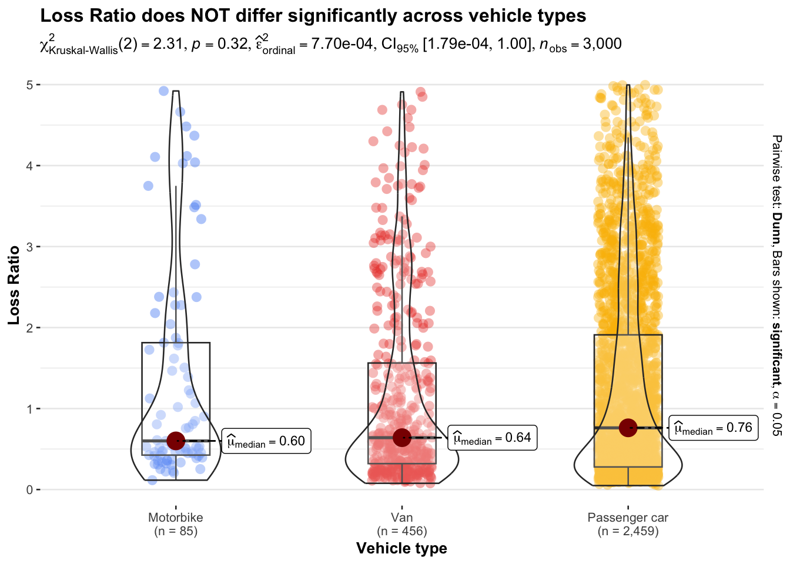
Since vehicle type did not affect the severity (Loss Ratio) of claims, I now turn to claim frequency. Using ggbarstats from Hands-on Exercise 4_2, I test whether the incidence of a claim is associated with the circulation area (urban vs rural) via a chi-square test of association.
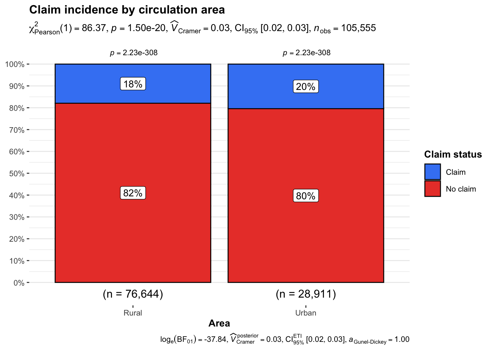
The chi-square test is highly significant (p = 1.5e-20), which at first glance suggests area matters. However, the effect size tells a different story: Cramér’s V is only 0.03, indicating a negligible association. The actual difference is small — an 18% claim rate in rural areas versus 20% in urban areas. This is a classic large-sample effect: with over 100,000 records, even a trivial 2-percentage-point gap becomes statistically significant. Reading the p-value alone would overstate the importance of area; the effect size shows it is not a material driver of claim frequency.
Having found that categorical factors are not material drivers, I examine numerical risk factors. Using ggscatterstats from Hands-on Exercise 4_2, I test the relationship between vehicle value and claim cost (Spearman correlation, on claiming policies, sampled for readability).
set.seed(1234)
sc_dat <- sandbox %>%
filter(Has_Claim == "Claim", Cost_claims_year < 20000, Value_vehicle < 60000) %>%
slice_sample(n = 3000)
ggscatterstats(data = sc_dat, x = Value_vehicle, y = Cost_claims_year, type = "nonparametric", xlab = "Vehicle value (EUR)", ylab = "Claim cost (EUR)", title = "Vehicle value vs claim cost")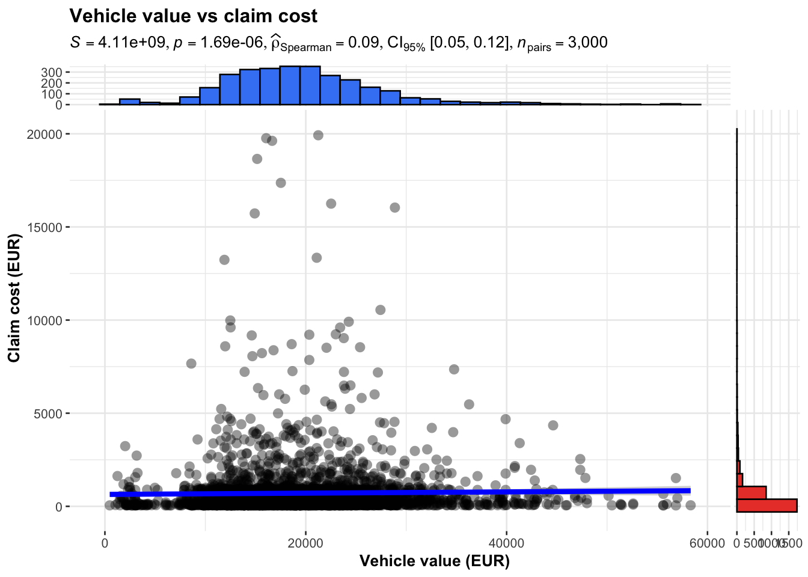
To see all numeric relationships at once, I compute a Spearman correlation matrix across the key numeric risk factors and visualise it as a heatmap with ggcorrplot. This also reveals multicollinearity (e.g. between power, cylinder capacity and vehicle value) that is relevant for later modelling.
pacman::p_load(ggcorrplot)
num_vars <- sandbox %>%
select(Premium, Cost_claims_year, Power, Cylinder_capacity, Value_vehicle, Weight, Age, Vehicle_Age) %>%
drop_na()
corr_mat <- cor(num_vars, method = "spearman")
ggcorrplot(corr_mat, type = "lower", lab = TRUE, lab_size = 2.8, colors = c("#2166ac", "white", "#b2182b"), title = "Spearman correlation of numeric risk factors")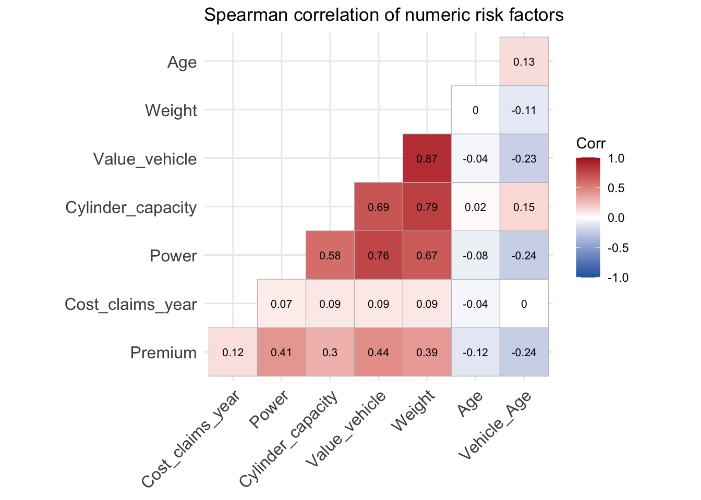
Two patterns stand out. First, the vehicle’s physical attributes are strongly intercorrelated — Value_vehicle and Weight (0.87), Cylinder_capacity and Value_vehicle (0.79), Power and Value_vehicle (0.76). This multicollinearity means these variables largely measure the same underlying “size and power” of the vehicle, and only a representative subset should enter any regression model. Second, and more importantly, Cost_claims_year correlates only weakly with every factor (all |ρ| ≤ 0.09): no single numeric variable predicts claim cost. By contrast, Premium correlates moderately with vehicle attributes (0.39–0.44), revealing that pricing is driven mainly by the vehicle’s physical characteristics rather than by variables linked to actual loss.
A naive ranking of segments by claim rate is misleading, because small segments (e.g. agricultural vehicles, with only ~850 policies) fluctuate far more by chance than large ones. Applying the funnel plot technique from Hands-on Exercise 4_4, I plot each vehicle-type × area segment’s claim rate against its exposure. Segments falling outside the funnel control limits are genuinely unusual, not just statistical noise — directly addressing portfolio volatility.
pacman::p_load(FunnelPlotR)
seg <- sandbox %>%
group_by(Type_risk, Area) %>%
summarise(claims = sum(N_claims_year > 0), exposure = n(), .groups = "drop") %>%
mutate(segment = paste(Type_risk, Area, sep = " - "))
funnel_plot(.data = seg, numerator = claims, denominator = exposure, group = segment, data_type = "PR", title = "Claim incidence by segment (vehicle type x area)", x_label = "Exposure (number of policies)", y_label = "Claim rate")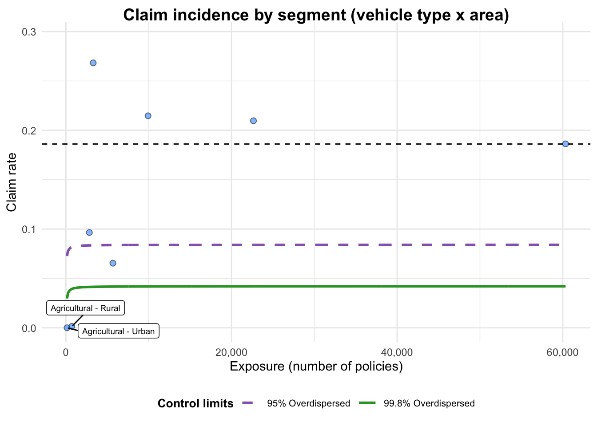
A funnel plot object with 8 points of which 2 are outliers.
Plot is adjusted for overdispersion. The funnel plot reframes the comparison correctly. The two agricultural segments sit at the far left (very low exposure) with near-zero claim rates — a naive ranking would flag them as the “safest” segments, but their position deep inside the wide part of the funnel shows this is most likely noise, not a genuine signal. Conversely, two segments fall outside the control limits and are genuinely high-risk after accounting for exposure. The largest segment (passenger cars, ~60,000 policies) lies almost exactly on the overall mean line, confirming it is stable and representative. The plot is adjusted for overdispersion, appropriate given the extra-Poisson variation typical of insurance claims.
Univariate analyses found no single dominant driver. To assess each factor’s independent effect while controlling for the others, I fit a logistic regression for the probability of a claim. Because Figure 9 showed strong collinearity among vehicle physical attributes, I include only Value_vehicle and Power as their representatives. Coefficients are exponentiated to odds ratios and shown as a forest plot (broom + ggplot2).
or_tbl <- tidy(mod, conf.int = TRUE, exponentiate = TRUE) %>%
filter(term != "(Intercept)")
ggplot(or_tbl, aes(x = estimate, y = reorder(term, estimate))) +
geom_vline(xintercept = 1, linetype = "dashed", colour = "grey50") +
geom_pointrange(aes(xmin = conf.low, xmax = conf.high), colour = "#b2182b") +
scale_x_log10() +
labs(title = "Which factors drive the odds of a claim?", subtitle = "Odds ratios from logistic regression (>1 raises claim risk); 95% CI", x = "Odds Ratio (log scale)", y = NULL) +
theme_minimal(base_size = 12)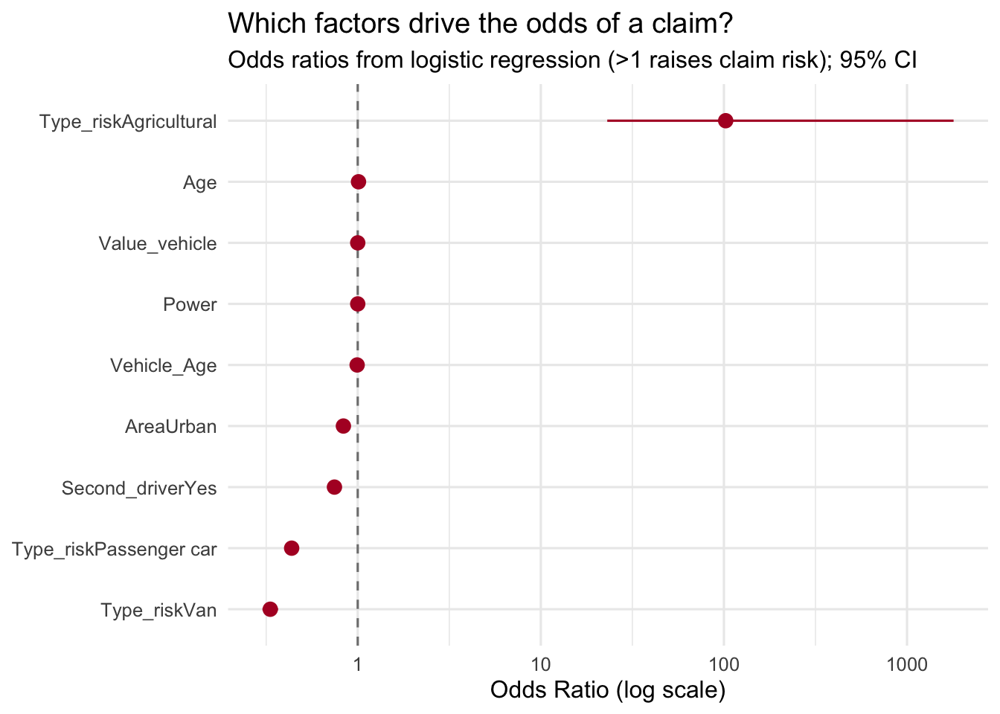
The forest plot delivers the study’s clearest answer. After controlling for all other factors, vehicle type is the one robust driver of claim incidence: vans and passenger cars have significantly lower odds of a claim than motorbikes (their points and confidence intervals sit clearly left of OR = 1). The numeric factors (Age, Value_vehicle, Power, Vehicle_Age) cluster tightly around OR = 1 with little independent effect. Agricultural vehicles show an enormous odds ratio (~100) but with an extremely wide confidence interval stretching beyond 1,000 — an unreliable estimate caused by the tiny sample, exactly the small-sample artefact the funnel plot warned against. The two methods cross-validate each other: what looked like extreme risk is in fact statistical noise.
This investigation set out to identify the drivers of profitability and volatility in the motor insurance portfolio. The visual and statistical evidence converges on a single, coherent picture.
Profitability is concentrated, not broad-based. Although about 91% of policies are individually profitable, the portfolio’s economics are dominated by the tail: a small number of catastrophic policies (Technical Result down to −€260,000) destroy a disproportionate share of the profit earned across all others. The Loss Ratio is therefore extremely right-skewed, and aggregate profitability hinges on managing the tail rather than on average pricing.
No single variable strongly predicts loss. Vehicle type does not significantly affect claim severity (Kruskal-Wallis, p = 0.32); circulation area is statistically associated with claim frequency but with a negligible effect size (Cramér’s V = 0.03); and vehicle value correlates only weakly with claim cost (Spearman ρ = 0.13). The correlation heatmap confirms that no numeric factor is meaningfully related to claim cost. Risk in this portfolio is largely idiosyncratic.
Where structure does exist, it lies in frequency, not severity. The multivariable logistic regression shows that, after controlling for other factors, vehicle type is the one robust driver of whether a claim occurs — vans and passenger cars have significantly lower claim odds than motorbikes. The apparently extreme risk of agricultural vehicles is a small-sample artefact, confirmed both by its wide regression confidence interval and by the funnel plot, where small segments fall well within the control limits once exposure is accounted for.
Implications for underwriting. Three recommendations follow. First, profitability should be improved by identifying and managing the small set of tail policies, rather than through across-the-board rate increases. Second, segment comparisons must account for exposure: small segments such as agricultural vehicles should not be judged on raw claim rates, which are dominated by noise. Third, the weak link between the rating factors (vehicle attributes) and actual claim cost suggests that current pricing captures the physical characteristics of the vehicle far better than its true risk — pointing to data enrichment as the most promising avenue for refining the underwriting strategy.
Pavía, J. M., Gil-Hernández, C. J., & Vila-Olmos, J. (2023). Spanish motor insurance data. Mendeley Data, V2. https://doi.org/10.17632/5cxyb5fp4f.2
Wickham, H., et al. (2019). Welcome to the tidyverse. Journal of Open Source Software, 4(43), 1686.
Patil, I. (2021). Visualizations with statistical details: The ‘ggstatsplot’ approach. Journal of Open Source Software, 6(61), 3167.